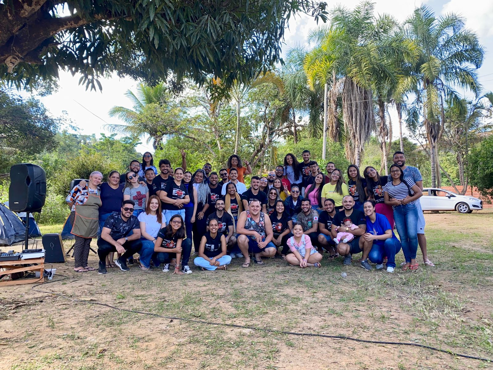
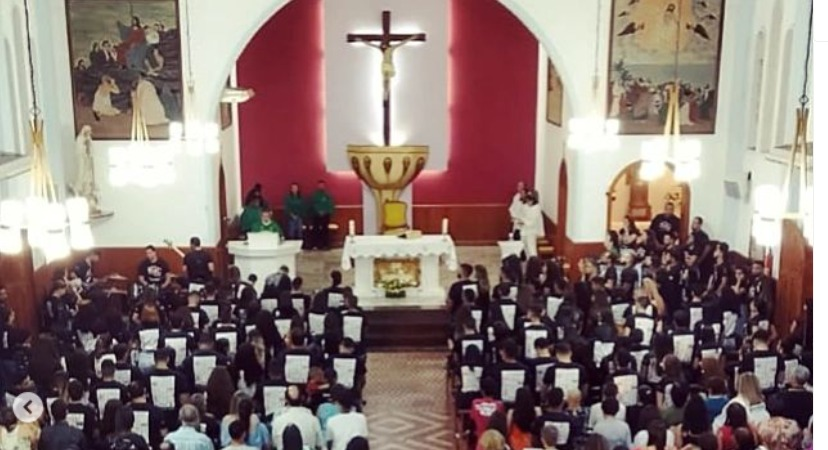
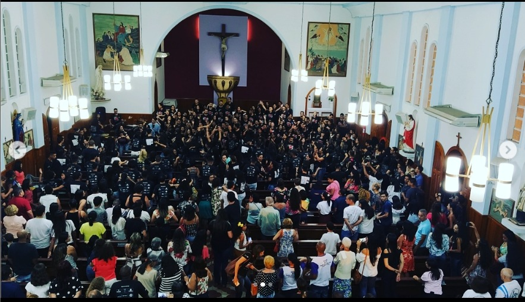
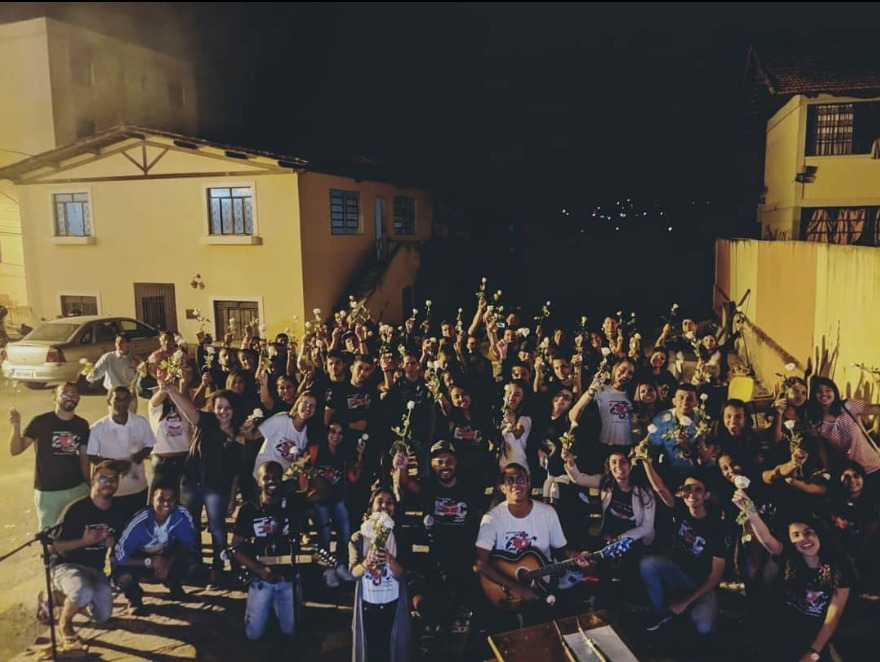

Coordenações
- 
- 
- 
-

- 
Mayth e Rhayane
"EJC é um grupo de Jovens que foi se moldando nas diferentes regiões do Brasil, não perdendo a essência do encontro "O importante sempre será a rosa". Para nós somos uma única Família que caminha para águas mais profundas em busca de nossa conversão e permanência da nossa Fé. Após o Encontro, nossas reuniões são nosso caminho para o aprofundamento e nossa permanência na religião, aqui somos amigos que se transformam em família e praticamos a unidade todos os dias. É uma honra fazer parte desta família e saber que minha vida foi mudada pelo EJC." - Rhayane
Jhonatan e Nayara
"O EJC pra mim é tudo, mudou minha vida em todos os quesitos, principalmente espiritual. Ali é aonde eu realmente consigo me conectar com Deus, vivi minhas melhores experiências no Espírito Santo, algo a mais sempre me puxa a não largar o barco." - Jhonatan
"O EJC é um marco em minha vida, por tudo que me dispus a vivenciar. Na coordenação aprendi e cresci muito, tanto espiritual quanto meu lado humano. Hoje o EJC é minha segunda família, é o grupo que me ajuda a fortalecer a minha conexão com Deus, a intimidade com Deus é mais forte quando estou em união com meus irmãos no EJC, do que sozinha em casa.Me sinto bem quando estou no EJC, sinto o amor de Deus tanto em oração quanto no carinho de cada pessoa ali. O EJC pra mim é amor." - Nayara
José Henrique e Andressa
Cristhyan e Lorrane
"O EJC é um grupo que deve ser a comunidade jovem da paroquia, participar das ações sociais que contribuem para melhoria da população a cerco da paróquia. E principalmente, ajudar na formação humana e espiritual da juventude." -Cristhyan
 Acampamento EJC Fátima 10 de Junho 2023
Acampamento EJC Fátima 10 de Junho 2023